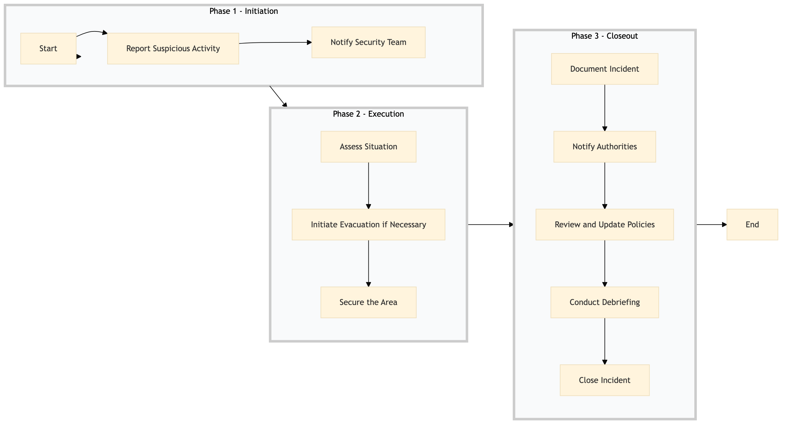

| Role | Steps |
|---|---|
| Front Desk Agent | 1.1 1.2 |
| Security Officer | 2.1 2.2 2.3 3.1 3.2 3.4 3.5 |
| Executive Housekeeper | 3.3 |
| Revenue Manager | 3.3 |
| Step | Name | Role | System | Input | Output | KPI | Dec? | Exc? | Pain Point / Risk |
|---|---|---|---|---|---|---|---|---|---|
| 1.1 | Report Suspicious Activity | Front Desk Agent | Oracle OPERA Cloud | Suspicious Person/Package Report Form | Logged incident in Oracle OPERA Cloud | Less than 2 minutes | N | Y | Delayed reporting due to unfamiliarity with the system |
| 1.2 | Notify Security Team | Front Desk Agent | Oracle OPERA Cloud | Logged incident in Oracle OPERA Cloud | Security Alert Notification | Less than 1 minute | N | Y | Miscommunication or missed notifications |
| 2.1 | Assess Situation | Security Officer | Oracle OPERA Cloud, Honeywell INNCOM | Security Alert Notification | Risk Assessment Report | Less than 5 minutes | Y | Y | Inconsistent risk assessment criteria |
| 2.2 | Initiate Evacuation if Necessary | Security Officer | Oracle OPERA Cloud, Honeywell INNCOM | Risk Assessment Report | Evacuation Order | Less than 10 minutes | Y | Y | Coordination issues during evacuation |
| 2.3 | Secure the Area | Security Officer | Oracle OPERA Cloud, Honeywell INNCOM | Evacuation Order | Area Secured Confirmation | Less than 5 minutes | N | Y | Inadequate security measures |
| 3.1 | Document Incident | Security Officer | Oracle OPERA Cloud | Area Secured Confirmation | Incident Report | Less than 15 minutes | N | Y | Incomplete documentation |
| 3.2 | Notify Authorities | Security Officer | Oracle OPERA Cloud, Honeywell INNCOM | Incident Report | Police Notification Acknowledgment | Less than 30 minutes | Y | Y | Delays in notifying authorities |
| 3.3 | Review and Update Policies | Executive Housekeeper, Revenue Manager | Oracle OPERA Cloud, IDeaS G3 RMS | Incident Report | Updated Security Policy | Less than 1 week | N | Y | Resistance to policy changes |
| 3.4 | Conduct Debriefing | Security Officer, Front Desk Agent | Oracle OPERA Cloud | Incident Report | Debriefing Summary | Less than 1 day | N | Y | Lack of clear communication channels |
| 3.5 | Close Incident | Security Officer, Front Desk Agent | Oracle OPERA Cloud | Debriefing Summary | Incident Closed Confirmation | Less than 1 day | N | Y | Inconsistent closure criteria |
This process outlines the steps to be taken by Marriott full-service hotels when a suspicious person or package is detected.